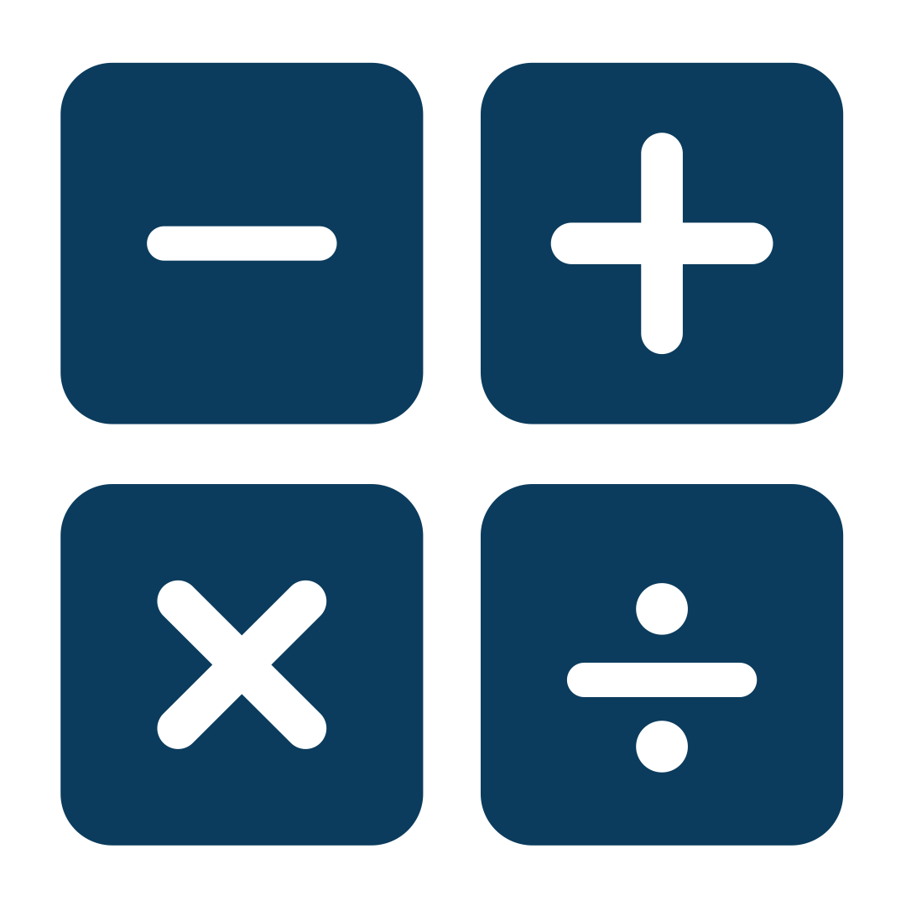

Voltar
Matemática
Aritmetica:

As operações aritméticas fundamentais são a adição e a multiplicação. A subtração e a divisão são, por esta ordem, a operação inversa da adição e a operação inversa da multiplicação.
Para cada uma das operações indicadas são conhecidos algoritmos, isto é, procedimentos de cálculo que nos permitem, sem grandes dificuldades, efetuar a adição, subtração, multiplicação e divisão de números inteiros e decimais positivos.
Para uma playlist completa, clique aqui